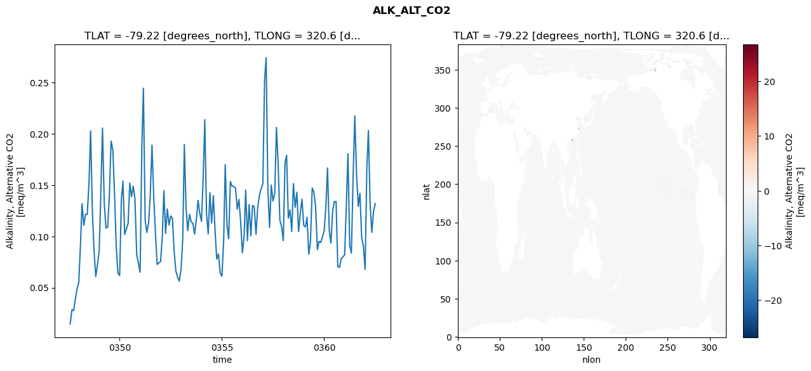
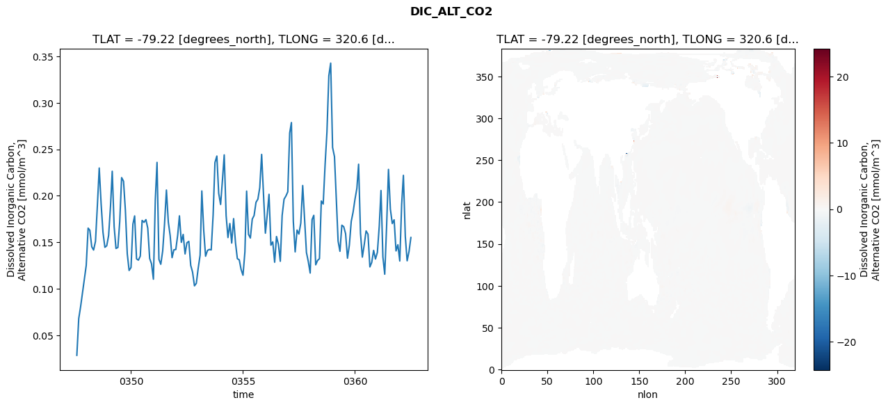
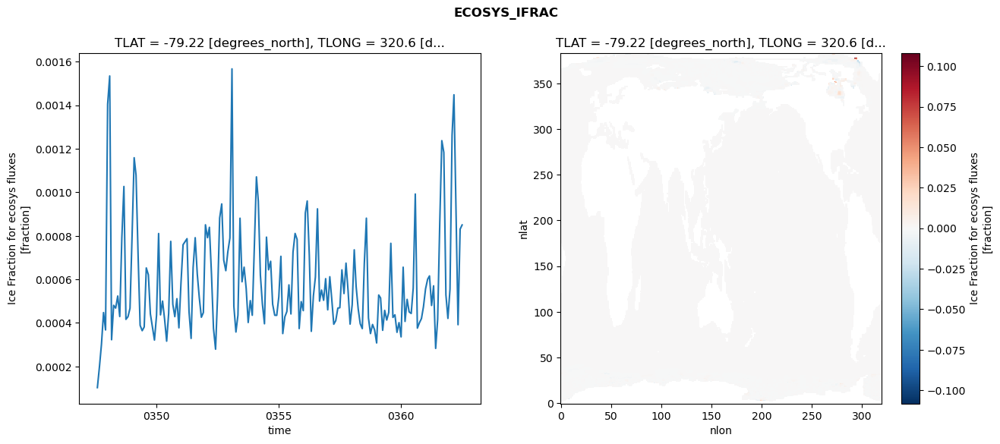
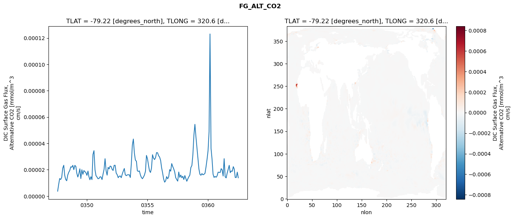

glb-dor_North_Atlantic_basin_014_1999-07-01_00058#
Simulation details#
Case: smyle.cdr-atlas-v0.glb-dor_North_Atlantic_basin_014_1999-07-01_00058.001
Basin: North_Atlantic_basin
Polygon: 14.0
Start date: 1999-07
Show code cell source Hide code cell source
import xarray as xr
import matplotlib.pyplot as plt
Show code cell source Hide code cell source
zarr_store = "/path/to/zarr/store"
# Parameters
zarr_store = "/global/cfs/projectdirs/m4746/Projects/Ocean-CDR-Atlas-v0/data/validation/smyle.cdr-atlas-v0.glb-dor_North_Atlantic_basin_014_1999-07-01_00058.001.validation.zarr"
Show code cell source Hide code cell source
%%time
ds_o = xr.open_zarr(zarr_store).compute()
ds_o
CPU times: user 745 ms, sys: 484 ms, total: 1.23 s
Wall time: 1.51 s
<xarray.Dataset> Size: 2MB
Dimensions: (nlat: 384, nlon: 320, time: 180)
Coordinates:
TLAT float64 8B -79.22
TLONG float64 8B 320.6
ULAT float64 8B -78.95
ULONG float64 8B 321.1
* time (time) object 1kB 0347-08-01 00:00:00 ... 0362-07-01 0...
z_t float32 4B 500.0
Dimensions without coordinates: nlat, nlon
Data variables:
ALK_ALT_CO2_diff (nlat, nlon) float32 492kB nan nan nan ... nan nan nan
ALK_ALT_CO2_rmse (time) float64 1kB 0.01465 0.02847 ... 0.125 0.1321
DIC_ALT_CO2_diff (nlat, nlon) float32 492kB nan nan nan ... nan nan nan
DIC_ALT_CO2_rmse (time) float64 1kB 0.02838 0.06796 ... 0.1401 0.1551
ECOSYS_IFRAC_diff (nlat, nlon) float32 492kB nan nan nan ... nan nan nan
ECOSYS_IFRAC_rmse (time) float64 1kB 0.0001027 0.0001987 ... 0.0008501
FG_ALT_CO2_diff (nlat, nlon) float32 492kB nan nan nan ... nan nan nan
FG_ALT_CO2_rmse (time) float64 1kB 3.714e-06 8.908e-06 ... 1.387e-05xarray.Dataset
- nlat: 384
- nlon: 320
- time: 180
- TLAT()float64-79.22
- long_name :
- array of t-grid latitudes
- units :
- degrees_north
array(-79.22052261)
- TLONG()float64320.6
- long_name :
- array of t-grid longitudes
- units :
- degrees_east
array(320.56250892)
- ULAT()float64-78.95
- long_name :
- array of u-grid latitudes
- units :
- degrees_north
array(-78.95289509)
- ULONG()float64321.1
- long_name :
- array of u-grid longitudes
- units :
- degrees_east
array(321.12500894)
- time(time)object0347-08-01 00:00:00 ... 0362-07-...
- bounds :
- time_bound
- long_name :
- time
array([cftime.DatetimeNoLeap(347, 8, 1, 0, 0, 0, 0, has_year_zero=True), cftime.DatetimeNoLeap(347, 9, 1, 0, 0, 0, 0, has_year_zero=True), cftime.DatetimeNoLeap(347, 10, 1, 0, 0, 0, 0, has_year_zero=True), cftime.DatetimeNoLeap(347, 11, 1, 0, 0, 0, 0, has_year_zero=True), cftime.DatetimeNoLeap(347, 12, 1, 0, 0, 0, 0, has_year_zero=True), cftime.DatetimeNoLeap(348, 1, 1, 0, 0, 0, 0, has_year_zero=True), cftime.DatetimeNoLeap(348, 2, 1, 0, 0, 0, 0, has_year_zero=True), cftime.DatetimeNoLeap(348, 3, 1, 0, 0, 0, 0, has_year_zero=True), cftime.DatetimeNoLeap(348, 4, 1, 0, 0, 0, 0, has_year_zero=True), cftime.DatetimeNoLeap(348, 5, 1, 0, 0, 0, 0, has_year_zero=True), cftime.DatetimeNoLeap(348, 6, 1, 0, 0, 0, 0, has_year_zero=True), cftime.DatetimeNoLeap(348, 7, 1, 0, 0, 0, 0, has_year_zero=True), cftime.DatetimeNoLeap(348, 8, 1, 0, 0, 0, 0, has_year_zero=True), cftime.DatetimeNoLeap(348, 9, 1, 0, 0, 0, 0, has_year_zero=True), cftime.DatetimeNoLeap(348, 10, 1, 0, 0, 0, 0, has_year_zero=True), cftime.DatetimeNoLeap(348, 11, 1, 0, 0, 0, 0, has_year_zero=True), cftime.DatetimeNoLeap(348, 12, 1, 0, 0, 0, 0, has_year_zero=True), cftime.DatetimeNoLeap(349, 1, 1, 0, 0, 0, 0, has_year_zero=True), cftime.DatetimeNoLeap(349, 2, 1, 0, 0, 0, 0, has_year_zero=True), cftime.DatetimeNoLeap(349, 3, 1, 0, 0, 0, 0, has_year_zero=True), cftime.DatetimeNoLeap(349, 4, 1, 0, 0, 0, 0, has_year_zero=True), cftime.DatetimeNoLeap(349, 5, 1, 0, 0, 0, 0, has_year_zero=True), cftime.DatetimeNoLeap(349, 6, 1, 0, 0, 0, 0, has_year_zero=True), cftime.DatetimeNoLeap(349, 7, 1, 0, 0, 0, 0, has_year_zero=True), cftime.DatetimeNoLeap(349, 8, 1, 0, 0, 0, 0, has_year_zero=True), cftime.DatetimeNoLeap(349, 9, 1, 0, 0, 0, 0, has_year_zero=True), cftime.DatetimeNoLeap(349, 10, 1, 0, 0, 0, 0, has_year_zero=True), cftime.DatetimeNoLeap(349, 11, 1, 0, 0, 0, 0, has_year_zero=True), cftime.DatetimeNoLeap(349, 12, 1, 0, 0, 0, 0, has_year_zero=True), cftime.DatetimeNoLeap(350, 1, 1, 0, 0, 0, 0, has_year_zero=True), cftime.DatetimeNoLeap(350, 2, 1, 0, 0, 0, 0, has_year_zero=True), cftime.DatetimeNoLeap(350, 3, 1, 0, 0, 0, 0, has_year_zero=True), cftime.DatetimeNoLeap(350, 4, 1, 0, 0, 0, 0, has_year_zero=True), cftime.DatetimeNoLeap(350, 5, 1, 0, 0, 0, 0, has_year_zero=True), cftime.DatetimeNoLeap(350, 6, 1, 0, 0, 0, 0, has_year_zero=True), cftime.DatetimeNoLeap(350, 7, 1, 0, 0, 0, 0, has_year_zero=True), cftime.DatetimeNoLeap(350, 8, 1, 0, 0, 0, 0, has_year_zero=True), cftime.DatetimeNoLeap(350, 9, 1, 0, 0, 0, 0, has_year_zero=True), cftime.DatetimeNoLeap(350, 10, 1, 0, 0, 0, 0, has_year_zero=True), cftime.DatetimeNoLeap(350, 11, 1, 0, 0, 0, 0, has_year_zero=True), cftime.DatetimeNoLeap(350, 12, 1, 0, 0, 0, 0, has_year_zero=True), cftime.DatetimeNoLeap(351, 1, 1, 0, 0, 0, 0, has_year_zero=True), cftime.DatetimeNoLeap(351, 2, 1, 0, 0, 0, 0, has_year_zero=True), cftime.DatetimeNoLeap(351, 3, 1, 0, 0, 0, 0, has_year_zero=True), cftime.DatetimeNoLeap(351, 4, 1, 0, 0, 0, 0, has_year_zero=True), cftime.DatetimeNoLeap(351, 5, 1, 0, 0, 0, 0, has_year_zero=True), cftime.DatetimeNoLeap(351, 6, 1, 0, 0, 0, 0, has_year_zero=True), cftime.DatetimeNoLeap(351, 7, 1, 0, 0, 0, 0, has_year_zero=True), cftime.DatetimeNoLeap(351, 8, 1, 0, 0, 0, 0, has_year_zero=True), cftime.DatetimeNoLeap(351, 9, 1, 0, 0, 0, 0, has_year_zero=True), cftime.DatetimeNoLeap(351, 10, 1, 0, 0, 0, 0, has_year_zero=True), cftime.DatetimeNoLeap(351, 11, 1, 0, 0, 0, 0, has_year_zero=True), cftime.DatetimeNoLeap(351, 12, 1, 0, 0, 0, 0, has_year_zero=True), cftime.DatetimeNoLeap(352, 1, 1, 0, 0, 0, 0, has_year_zero=True), cftime.DatetimeNoLeap(352, 2, 1, 0, 0, 0, 0, has_year_zero=True), cftime.DatetimeNoLeap(352, 3, 1, 0, 0, 0, 0, has_year_zero=True), cftime.DatetimeNoLeap(352, 4, 1, 0, 0, 0, 0, has_year_zero=True), cftime.DatetimeNoLeap(352, 5, 1, 0, 0, 0, 0, has_year_zero=True), cftime.DatetimeNoLeap(352, 6, 1, 0, 0, 0, 0, has_year_zero=True), cftime.DatetimeNoLeap(352, 7, 1, 0, 0, 0, 0, has_year_zero=True), cftime.DatetimeNoLeap(352, 8, 1, 0, 0, 0, 0, has_year_zero=True), cftime.DatetimeNoLeap(352, 9, 1, 0, 0, 0, 0, has_year_zero=True), cftime.DatetimeNoLeap(352, 10, 1, 0, 0, 0, 0, has_year_zero=True), cftime.DatetimeNoLeap(352, 11, 1, 0, 0, 0, 0, has_year_zero=True), cftime.DatetimeNoLeap(352, 12, 1, 0, 0, 0, 0, has_year_zero=True), cftime.DatetimeNoLeap(353, 1, 1, 0, 0, 0, 0, has_year_zero=True), cftime.DatetimeNoLeap(353, 2, 1, 0, 0, 0, 0, has_year_zero=True), cftime.DatetimeNoLeap(353, 3, 1, 0, 0, 0, 0, has_year_zero=True), cftime.DatetimeNoLeap(353, 4, 1, 0, 0, 0, 0, has_year_zero=True), cftime.DatetimeNoLeap(353, 5, 1, 0, 0, 0, 0, has_year_zero=True), cftime.DatetimeNoLeap(353, 6, 1, 0, 0, 0, 0, has_year_zero=True), cftime.DatetimeNoLeap(353, 7, 1, 0, 0, 0, 0, has_year_zero=True), cftime.DatetimeNoLeap(353, 8, 1, 0, 0, 0, 0, has_year_zero=True), cftime.DatetimeNoLeap(353, 9, 1, 0, 0, 0, 0, has_year_zero=True), cftime.DatetimeNoLeap(353, 10, 1, 0, 0, 0, 0, has_year_zero=True), cftime.DatetimeNoLeap(353, 11, 1, 0, 0, 0, 0, has_year_zero=True), cftime.DatetimeNoLeap(353, 12, 1, 0, 0, 0, 0, has_year_zero=True), cftime.DatetimeNoLeap(354, 1, 1, 0, 0, 0, 0, has_year_zero=True), cftime.DatetimeNoLeap(354, 2, 1, 0, 0, 0, 0, has_year_zero=True), cftime.DatetimeNoLeap(354, 3, 1, 0, 0, 0, 0, has_year_zero=True), cftime.DatetimeNoLeap(354, 4, 1, 0, 0, 0, 0, has_year_zero=True), cftime.DatetimeNoLeap(354, 5, 1, 0, 0, 0, 0, has_year_zero=True), cftime.DatetimeNoLeap(354, 6, 1, 0, 0, 0, 0, has_year_zero=True), cftime.DatetimeNoLeap(354, 7, 1, 0, 0, 0, 0, has_year_zero=True), cftime.DatetimeNoLeap(354, 8, 1, 0, 0, 0, 0, has_year_zero=True), cftime.DatetimeNoLeap(354, 9, 1, 0, 0, 0, 0, has_year_zero=True), cftime.DatetimeNoLeap(354, 10, 1, 0, 0, 0, 0, has_year_zero=True), cftime.DatetimeNoLeap(354, 11, 1, 0, 0, 0, 0, has_year_zero=True), cftime.DatetimeNoLeap(354, 12, 1, 0, 0, 0, 0, has_year_zero=True), cftime.DatetimeNoLeap(355, 1, 1, 0, 0, 0, 0, has_year_zero=True), cftime.DatetimeNoLeap(355, 2, 1, 0, 0, 0, 0, has_year_zero=True), cftime.DatetimeNoLeap(355, 3, 1, 0, 0, 0, 0, has_year_zero=True), cftime.DatetimeNoLeap(355, 4, 1, 0, 0, 0, 0, has_year_zero=True), cftime.DatetimeNoLeap(355, 5, 1, 0, 0, 0, 0, has_year_zero=True), cftime.DatetimeNoLeap(355, 6, 1, 0, 0, 0, 0, has_year_zero=True), cftime.DatetimeNoLeap(355, 7, 1, 0, 0, 0, 0, has_year_zero=True), cftime.DatetimeNoLeap(355, 8, 1, 0, 0, 0, 0, has_year_zero=True), cftime.DatetimeNoLeap(355, 9, 1, 0, 0, 0, 0, has_year_zero=True), cftime.DatetimeNoLeap(355, 10, 1, 0, 0, 0, 0, has_year_zero=True), cftime.DatetimeNoLeap(355, 11, 1, 0, 0, 0, 0, has_year_zero=True), cftime.DatetimeNoLeap(355, 12, 1, 0, 0, 0, 0, has_year_zero=True), cftime.DatetimeNoLeap(356, 1, 1, 0, 0, 0, 0, has_year_zero=True), cftime.DatetimeNoLeap(356, 2, 1, 0, 0, 0, 0, has_year_zero=True), cftime.DatetimeNoLeap(356, 3, 1, 0, 0, 0, 0, has_year_zero=True), cftime.DatetimeNoLeap(356, 4, 1, 0, 0, 0, 0, has_year_zero=True), cftime.DatetimeNoLeap(356, 5, 1, 0, 0, 0, 0, has_year_zero=True), cftime.DatetimeNoLeap(356, 6, 1, 0, 0, 0, 0, has_year_zero=True), cftime.DatetimeNoLeap(356, 7, 1, 0, 0, 0, 0, has_year_zero=True), cftime.DatetimeNoLeap(356, 8, 1, 0, 0, 0, 0, has_year_zero=True), cftime.DatetimeNoLeap(356, 9, 1, 0, 0, 0, 0, has_year_zero=True), cftime.DatetimeNoLeap(356, 10, 1, 0, 0, 0, 0, has_year_zero=True), cftime.DatetimeNoLeap(356, 11, 1, 0, 0, 0, 0, has_year_zero=True), cftime.DatetimeNoLeap(356, 12, 1, 0, 0, 0, 0, has_year_zero=True), cftime.DatetimeNoLeap(357, 1, 1, 0, 0, 0, 0, has_year_zero=True), cftime.DatetimeNoLeap(357, 2, 1, 0, 0, 0, 0, has_year_zero=True), cftime.DatetimeNoLeap(357, 3, 1, 0, 0, 0, 0, has_year_zero=True), cftime.DatetimeNoLeap(357, 4, 1, 0, 0, 0, 0, has_year_zero=True), cftime.DatetimeNoLeap(357, 5, 1, 0, 0, 0, 0, has_year_zero=True), cftime.DatetimeNoLeap(357, 6, 1, 0, 0, 0, 0, has_year_zero=True), cftime.DatetimeNoLeap(357, 7, 1, 0, 0, 0, 0, has_year_zero=True), cftime.DatetimeNoLeap(357, 8, 1, 0, 0, 0, 0, has_year_zero=True), cftime.DatetimeNoLeap(357, 9, 1, 0, 0, 0, 0, has_year_zero=True), cftime.DatetimeNoLeap(357, 10, 1, 0, 0, 0, 0, has_year_zero=True), cftime.DatetimeNoLeap(357, 11, 1, 0, 0, 0, 0, has_year_zero=True), cftime.DatetimeNoLeap(357, 12, 1, 0, 0, 0, 0, has_year_zero=True), cftime.DatetimeNoLeap(358, 1, 1, 0, 0, 0, 0, has_year_zero=True), cftime.DatetimeNoLeap(358, 2, 1, 0, 0, 0, 0, has_year_zero=True), cftime.DatetimeNoLeap(358, 3, 1, 0, 0, 0, 0, has_year_zero=True), cftime.DatetimeNoLeap(358, 4, 1, 0, 0, 0, 0, has_year_zero=True), cftime.DatetimeNoLeap(358, 5, 1, 0, 0, 0, 0, has_year_zero=True), cftime.DatetimeNoLeap(358, 6, 1, 0, 0, 0, 0, has_year_zero=True), cftime.DatetimeNoLeap(358, 7, 1, 0, 0, 0, 0, has_year_zero=True), cftime.DatetimeNoLeap(358, 8, 1, 0, 0, 0, 0, has_year_zero=True), cftime.DatetimeNoLeap(358, 9, 1, 0, 0, 0, 0, has_year_zero=True), cftime.DatetimeNoLeap(358, 10, 1, 0, 0, 0, 0, has_year_zero=True), cftime.DatetimeNoLeap(358, 11, 1, 0, 0, 0, 0, has_year_zero=True), cftime.DatetimeNoLeap(358, 12, 1, 0, 0, 0, 0, has_year_zero=True), cftime.DatetimeNoLeap(359, 1, 1, 0, 0, 0, 0, has_year_zero=True), cftime.DatetimeNoLeap(359, 2, 1, 0, 0, 0, 0, has_year_zero=True), cftime.DatetimeNoLeap(359, 3, 1, 0, 0, 0, 0, has_year_zero=True), cftime.DatetimeNoLeap(359, 4, 1, 0, 0, 0, 0, has_year_zero=True), cftime.DatetimeNoLeap(359, 5, 1, 0, 0, 0, 0, has_year_zero=True), cftime.DatetimeNoLeap(359, 6, 1, 0, 0, 0, 0, has_year_zero=True), cftime.DatetimeNoLeap(359, 7, 1, 0, 0, 0, 0, has_year_zero=True), cftime.DatetimeNoLeap(359, 8, 1, 0, 0, 0, 0, has_year_zero=True), cftime.DatetimeNoLeap(359, 9, 1, 0, 0, 0, 0, has_year_zero=True), cftime.DatetimeNoLeap(359, 10, 1, 0, 0, 0, 0, has_year_zero=True), cftime.DatetimeNoLeap(359, 11, 1, 0, 0, 0, 0, has_year_zero=True), cftime.DatetimeNoLeap(359, 12, 1, 0, 0, 0, 0, has_year_zero=True), cftime.DatetimeNoLeap(360, 1, 1, 0, 0, 0, 0, has_year_zero=True), cftime.DatetimeNoLeap(360, 2, 1, 0, 0, 0, 0, has_year_zero=True), cftime.DatetimeNoLeap(360, 3, 1, 0, 0, 0, 0, has_year_zero=True), cftime.DatetimeNoLeap(360, 4, 1, 0, 0, 0, 0, has_year_zero=True), cftime.DatetimeNoLeap(360, 5, 1, 0, 0, 0, 0, has_year_zero=True), cftime.DatetimeNoLeap(360, 6, 1, 0, 0, 0, 0, has_year_zero=True), cftime.DatetimeNoLeap(360, 7, 1, 0, 0, 0, 0, has_year_zero=True), cftime.DatetimeNoLeap(360, 8, 1, 0, 0, 0, 0, has_year_zero=True), cftime.DatetimeNoLeap(360, 9, 1, 0, 0, 0, 0, has_year_zero=True), cftime.DatetimeNoLeap(360, 10, 1, 0, 0, 0, 0, has_year_zero=True), cftime.DatetimeNoLeap(360, 11, 1, 0, 0, 0, 0, has_year_zero=True), cftime.DatetimeNoLeap(360, 12, 1, 0, 0, 0, 0, has_year_zero=True), cftime.DatetimeNoLeap(361, 1, 1, 0, 0, 0, 0, has_year_zero=True), cftime.DatetimeNoLeap(361, 2, 1, 0, 0, 0, 0, has_year_zero=True), cftime.DatetimeNoLeap(361, 3, 1, 0, 0, 0, 0, has_year_zero=True), cftime.DatetimeNoLeap(361, 4, 1, 0, 0, 0, 0, has_year_zero=True), cftime.DatetimeNoLeap(361, 5, 1, 0, 0, 0, 0, has_year_zero=True), cftime.DatetimeNoLeap(361, 6, 1, 0, 0, 0, 0, has_year_zero=True), cftime.DatetimeNoLeap(361, 7, 1, 0, 0, 0, 0, has_year_zero=True), cftime.DatetimeNoLeap(361, 8, 1, 0, 0, 0, 0, has_year_zero=True), cftime.DatetimeNoLeap(361, 9, 1, 0, 0, 0, 0, has_year_zero=True), cftime.DatetimeNoLeap(361, 10, 1, 0, 0, 0, 0, has_year_zero=True), cftime.DatetimeNoLeap(361, 11, 1, 0, 0, 0, 0, has_year_zero=True), cftime.DatetimeNoLeap(361, 12, 1, 0, 0, 0, 0, has_year_zero=True), cftime.DatetimeNoLeap(362, 1, 1, 0, 0, 0, 0, has_year_zero=True), cftime.DatetimeNoLeap(362, 2, 1, 0, 0, 0, 0, has_year_zero=True), cftime.DatetimeNoLeap(362, 3, 1, 0, 0, 0, 0, has_year_zero=True), cftime.DatetimeNoLeap(362, 4, 1, 0, 0, 0, 0, has_year_zero=True), cftime.DatetimeNoLeap(362, 5, 1, 0, 0, 0, 0, has_year_zero=True), cftime.DatetimeNoLeap(362, 6, 1, 0, 0, 0, 0, has_year_zero=True), cftime.DatetimeNoLeap(362, 7, 1, 0, 0, 0, 0, has_year_zero=True)], dtype=object) - z_t()float32500.0
- long_name :
- depth from surface to midpoint of layer
- positive :
- down
- units :
- centimeters
- valid_max :
- 537500.0
- valid_min :
- 500.0
array(500., dtype=float32)
- ALK_ALT_CO2_diff(nlat, nlon)float32nan nan nan nan ... nan nan nan nan
- cell_methods :
- time: mean
- grid_loc :
- 3111
- long_name :
- Alkalinity, Alternative CO2
- units :
- meq/m^3
array([[ nan, nan, nan, ..., nan, nan, nan], [ nan, nan, nan, ..., nan, nan, nan], [0.02197266, 0.00634766, 0.015625 , ..., nan, nan, nan], ..., [ nan, nan, nan, ..., nan, nan, nan], [ nan, nan, nan, ..., nan, nan, nan], [ nan, nan, nan, ..., nan, nan, nan]], dtype=float32) - ALK_ALT_CO2_rmse(time)float640.01465 0.02847 ... 0.125 0.1321
- cell_methods :
- time: mean
- grid_loc :
- 3111
- long_name :
- Alkalinity, Alternative CO2
- units :
- meq/m^3
array([0.01464668, 0.02846683, 0.02762636, 0.0386742 , 0.04839263, 0.05493948, 0.09238705, 0.13196944, 0.11090074, 0.12143427, 0.12158407, 0.14960324, 0.20299569, 0.12530905, 0.08551569, 0.06086558, 0.07249399, 0.08631941, 0.14582714, 0.20569881, 0.13264605, 0.10825327, 0.10907429, 0.13966177, 0.1930246 , 0.18394515, 0.14297875, 0.09037891, 0.06420291, 0.06178589, 0.13595721, 0.15389617, 0.10198039, 0.10737218, 0.11272342, 0.15197041, 0.13893571, 0.14900715, 0.13664697, 0.08226137, 0.07370145, 0.06511292, 0.18716754, 0.24458397, 0.11583573, 0.10384175, 0.11309533, 0.1403112 , 0.18901427, 0.13836917, 0.1040908 , 0.07263186, 0.07414163, 0.07547136, 0.09936739, 0.14467764, 0.10298945, 0.12684594, 0.11115602, 0.12000395, 0.11762461, 0.08519716, 0.06620952, 0.0604221 , 0.05635723, 0.06745063, 0.09755761, 0.18966636, 0.12723871, 0.10564093, 0.12153738, 0.11421354, 0.11271126, 0.10233333, 0.11639168, 0.13513598, 0.12260653, 0.11470048, 0.15795478, 0.21387997, 0.12271662, 0.10253047, 0.14275277, 0.11318475, 0.13975907, 0.10487165, 0.07780793, 0.08292927, 0.06424562, 0.06112911, 0.09597737, 0.17001602, 0.11145044, 0.09777768, 0.15350181, 0.14899913, 0.14869695, 0.14698579, 0.12652551, 0.13608378, 0.11443322, 0.08406749, 0.10063622, 0.14531536, 0.095885 , 0.13117291, 0.10064726, 0.13015603, 0.1287832 , 0.10203346, 0.12829216, 0.13994238, 0.14651222, 0.15116876, 0.25202932, 0.27453679, 0.14605663, 0.10882788, 0.15006211, 0.1346269 , 0.14130164, 0.20634374, 0.17079483, 0.115711 , 0.10969134, 0.09590709, 0.17183278, 0.17920482, 0.11780961, 0.1257975 , 0.104711 , 0.15154332, 0.12839111, 0.14304779, 0.10470397, 0.12317957, 0.13624773, 0.11067373, 0.10933046, 0.11866691, 0.0826398 , 0.09537536, 0.14720515, 0.14332823, 0.12915226, 0.08701016, 0.09516 , 0.09418765, 0.09963274, 0.10550323, 0.13017077, 0.16683766, 0.10599445, 0.09351396, 0.12489015, 0.13409463, 0.13389202, 0.07037675, 0.06975798, 0.07829981, 0.07997292, 0.08203173, 0.13252694, 0.18064128, 0.09127914, 0.08380099, 0.15777957, 0.21774097, 0.16096225, 0.12926212, 0.14203273, 0.09828421, 0.09071742, 0.0678964 , 0.167119 , 0.20333492, 0.13118181, 0.10394092, 0.12497508, 0.13210252]) - DIC_ALT_CO2_diff(nlat, nlon)float32nan nan nan nan ... nan nan nan nan
- cell_methods :
- time: mean
- grid_loc :
- 3111
- long_name :
- Dissolved Inorganic Carbon, Alternative CO2
- units :
- mmol/m^3
array([[ nan, nan, nan, ..., nan, nan, nan], [ nan, nan, nan, ..., nan, nan, nan], [0.01220703, 0.00024414, 0.00366211, ..., nan, nan, nan], ..., [ nan, nan, nan, ..., nan, nan, nan], [ nan, nan, nan, ..., nan, nan, nan], [ nan, nan, nan, ..., nan, nan, nan]], dtype=float32) - DIC_ALT_CO2_rmse(time)float640.02838 0.06796 ... 0.1401 0.1551
- cell_methods :
- time: mean
- grid_loc :
- 3111
- long_name :
- Dissolved Inorganic Carbon, Alternative CO2
- units :
- mmol/m^3
array([0.02837752, 0.06796253, 0.0805339 , 0.09565623, 0.11020908, 0.12500822, 0.16521319, 0.16285365, 0.14517074, 0.14162668, 0.15103705, 0.18853497, 0.22984727, 0.19106243, 0.160799 , 0.14458117, 0.14619291, 0.15728532, 0.18889935, 0.22638704, 0.16690251, 0.14335042, 0.1443899 , 0.17224452, 0.21955213, 0.21560741, 0.18466638, 0.13751249, 0.11965412, 0.12281505, 0.16952544, 0.17832533, 0.13213588, 0.13075017, 0.13508857, 0.1734656 , 0.17144322, 0.17437443, 0.16513188, 0.13255717, 0.12686251, 0.11028183, 0.19562092, 0.23591955, 0.13160537, 0.12631724, 0.14056385, 0.16938686, 0.20615017, 0.17169531, 0.15718091, 0.13347556, 0.14191384, 0.14216365, 0.15788501, 0.17840639, 0.14991718, 0.15840723, 0.13744328, 0.14945999, 0.1509254 , 0.12516985, 0.11788 , 0.10311312, 0.10578383, 0.12209982, 0.13609703, 0.20517542, 0.16269532, 0.13496851, 0.14116987, 0.14229073, 0.14175618, 0.1791667 , 0.23580509, 0.24271269, 0.20264803, 0.19065281, 0.21765438, 0.24398575, 0.17878055, 0.15506076, 0.17012734, 0.14915367, 0.17542627, 0.14924516, 0.13236865, 0.13107921, 0.12076386, 0.11451578, 0.1396084 , 0.2050315 , 0.15846765, 0.15454338, 0.17492166, 0.17878945, 0.19298172, 0.19641928, 0.20867763, 0.24448466, 0.20165474, 0.15976297, 0.180409 , 0.20158835, 0.14691179, 0.15040184, 0.12851589, 0.15616927, 0.14775099, 0.12954099, 0.17880383, 0.19630457, 0.19965283, 0.20426621, 0.26755411, 0.27876062, 0.17257449, 0.13962901, 0.16313244, 0.15880808, 0.17069157, 0.21103708, 0.17544716, 0.13903244, 0.12930277, 0.11688705, 0.17445537, 0.17897157, 0.12574611, 0.13040574, 0.13232793, 0.19438883, 0.19109591, 0.23355911, 0.26851219, 0.32911278, 0.34268955, 0.25199784, 0.24208375, 0.19925686, 0.15124397, 0.1402529 , 0.16832876, 0.16679924, 0.15925318, 0.13284193, 0.14676618, 0.17241115, 0.18232906, 0.19619986, 0.20801616, 0.23394114, 0.15950835, 0.13402887, 0.14744258, 0.16218073, 0.15872091, 0.12347884, 0.1282986 , 0.1412643 , 0.13198909, 0.13908316, 0.1677096 , 0.20565317, 0.13413349, 0.11562714, 0.16816191, 0.22835798, 0.18551203, 0.1701008 , 0.1741655 , 0.14066531, 0.14733438, 0.12985347, 0.19085628, 0.22198694, 0.15633254, 0.13007287, 0.14009617, 0.15509633]) - ECOSYS_IFRAC_diff(nlat, nlon)float32nan nan nan nan ... nan nan nan nan
- cell_methods :
- time: mean
- grid_loc :
- 2110
- long_name :
- Ice Fraction for ecosys fluxes
- units :
- fraction
array([[ nan, nan, nan, ..., nan, nan, nan], [ nan, nan, nan, ..., nan, nan, nan], [-8.3446503e-07, -3.1948090e-05, 1.2814999e-05, ..., nan, nan, nan], ..., [ nan, nan, nan, ..., nan, nan, nan], [ nan, nan, nan, ..., nan, nan, nan], [ nan, nan, nan, ..., nan, nan, nan]], dtype=float32) - ECOSYS_IFRAC_rmse(time)float640.0001027 0.0001987 ... 0.0008501
- cell_methods :
- time: mean
- grid_loc :
- 2110
- long_name :
- Ice Fraction for ecosys fluxes
- units :
- fraction
array([0.00010271, 0.00019873, 0.00030179, 0.00044753, 0.00036769, 0.00140448, 0.00153451, 0.00032272, 0.00048087, 0.0004681 , 0.00052352, 0.00042935, 0.00079057, 0.00102683, 0.00041628, 0.00042861, 0.0004672 , 0.00080222, 0.00115888, 0.00107924, 0.00070777, 0.00038895, 0.00036426, 0.00038144, 0.00065249, 0.0006213 , 0.00044144, 0.00038052, 0.00032117, 0.00043456, 0.00081067, 0.00043696, 0.00050023, 0.00041787, 0.00031616, 0.00044403, 0.00077465, 0.00048527, 0.00042887, 0.00051129, 0.00037743, 0.00058438, 0.00075925, 0.00077238, 0.00078709, 0.00045146, 0.00032879, 0.00065435, 0.0007914 , 0.00062465, 0.00051605, 0.00042599, 0.00044747, 0.00085076, 0.00079157, 0.00083921, 0.00062453, 0.00037462, 0.00027926, 0.00052304, 0.00088203, 0.00094661, 0.00068857, 0.00064001, 0.00072645, 0.0007901 , 0.00156717, 0.000477 , 0.00035821, 0.00043562, 0.000881 , 0.00058908, 0.00065604, 0.00055785, 0.00040193, 0.00050238, 0.00043512, 0.00074734, 0.00107089, 0.00095906, 0.00061962, 0.00048669, 0.00039608, 0.00079404, 0.00064401, 0.00068317, 0.00048589, 0.00043524, 0.00043478, 0.00051986, 0.00070601, 0.00035104, 0.00042808, 0.00045211, 0.00057473, 0.00044114, 0.00072575, 0.00081101, 0.00078364, 0.00037403, 0.00049778, 0.00045644, 0.00090514, 0.00096013, 0.00071178, 0.00036132, 0.00052363, 0.00061058, 0.00092412, 0.00050018, 0.000551 , 0.00050396, 0.00060321, 0.00046014, 0.00061214, 0.00051421, 0.00039396, 0.00041042, 0.00046796, 0.00046989, 0.00064368, 0.00053498, 0.0006746 , 0.00054648, 0.00039453, 0.00048338, 0.00073579, 0.00056745, 0.00046366, 0.00039614, 0.0003738 , 0.00067191, 0.00088118, 0.00042277, 0.00035096, 0.0003928 , 0.00036862, 0.00030801, 0.0005282 , 0.00051448, 0.00036606, 0.00045756, 0.00041318, 0.0004484 , 0.00076571, 0.00042529, 0.0004372 , 0.00035682, 0.00040139, 0.00033587, 0.00065593, 0.00040683, 0.00050816, 0.00045062, 0.0004434 , 0.00055986, 0.00099218, 0.00037585, 0.00040017, 0.00041998, 0.00047446, 0.00055611, 0.0006005 , 0.00061603, 0.00048023, 0.00057038, 0.00028295, 0.00041679, 0.00085772, 0.00123728, 0.00118319, 0.00052925, 0.00042068, 0.00055518, 0.00126265, 0.00144818, 0.00091472, 0.00039173, 0.00083074, 0.0008501 ]) - FG_ALT_CO2_diff(nlat, nlon)float32nan nan nan nan ... nan nan nan nan
- cell_methods :
- time: mean
- grid_loc :
- 2110
- long_name :
- DIC Surface Gas Flux, Alternative CO2
- units :
- mmol/m^3 cm/s
array([[ nan, nan, nan, ..., nan, nan, nan], [ nan, nan, nan, ..., nan, nan, nan], [1.3951421e-08, 2.9607463e-08, 2.6851907e-08, ..., nan, nan, nan], ..., [ nan, nan, nan, ..., nan, nan, nan], [ nan, nan, nan, ..., nan, nan, nan], [ nan, nan, nan, ..., nan, nan, nan]], dtype=float32) - FG_ALT_CO2_rmse(time)float643.714e-06 8.908e-06 ... 1.387e-05
- cell_methods :
- time: mean
- grid_loc :
- 2110
- long_name :
- DIC Surface Gas Flux, Alternative CO2
- units :
- mmol/m^3 cm/s
array([3.71419613e-06, 8.90762411e-06, 1.33242909e-05, 1.25699186e-05, 1.41417069e-05, 2.11926349e-05, 2.34137498e-05, 1.58397051e-05, 1.26093788e-05, 1.16307067e-05, 1.59304215e-05, 1.80499452e-05, 1.94813042e-05, 2.22222045e-05, 2.18963733e-05, 2.33412755e-05, 2.00597462e-05, 2.32960030e-05, 2.25318572e-05, 1.74277194e-05, 1.44752780e-05, 1.68490587e-05, 2.07166294e-05, 1.33002730e-05, 2.00136986e-05, 1.65204328e-05, 1.93837068e-05, 1.85326193e-05, 1.77482440e-05, 1.57119898e-05, 1.90183591e-05, 1.47769908e-05, 1.23753228e-05, 1.47362181e-05, 1.24710295e-05, 3.15869020e-05, 3.44823149e-05, 1.98771600e-05, 1.54903340e-05, 1.44310996e-05, 1.31591107e-05, 1.33908469e-05, 1.46790787e-05, 1.45197141e-05, 1.25371219e-05, 1.66171124e-05, 2.02942952e-05, 2.83847144e-05, 1.92380606e-05, 1.58779205e-05, 2.18353313e-05, 2.06295466e-05, 2.27976129e-05, 2.24021096e-05, 2.01302747e-05, 1.94595846e-05, 2.33387944e-05, 2.33963292e-05, 1.74754454e-05, 1.62725322e-05, 1.39658400e-05, 1.50500033e-05, 1.53198228e-05, 1.39691120e-05, 1.66841570e-05, 1.89378839e-05, 2.09713879e-05, 1.62611610e-05, 1.54834961e-05, 1.61215412e-05, 1.61353426e-05, 1.62147996e-05, 1.40884396e-05, 2.46788937e-05, 3.86587667e-05, 4.33161057e-05, 3.27143774e-05, 2.73263192e-05, 2.64508377e-05, 1.91896304e-05, ... 3.06535528e-05, 2.96153130e-05, 2.70433675e-05, 2.16887281e-05, 1.76884430e-05, 1.31752623e-05, 1.05772020e-05, 1.15216814e-05, 1.47904843e-05, 1.31161793e-05, 1.45397231e-05, 2.01189409e-05, 1.88944111e-05, 2.46853672e-05, 2.24195849e-05, 2.07600739e-05, 1.82999089e-05, 1.40018626e-05, 1.25220696e-05, 1.13519415e-05, 1.82876790e-05, 1.42017387e-05, 1.59793712e-05, 1.39207247e-05, 1.50628131e-05, 1.25646211e-05, 1.55886930e-05, 1.34291618e-05, 1.12660441e-05, 1.30441074e-05, 1.46424993e-05, 1.59199943e-05, 2.16757701e-05, 2.32285130e-05, 3.14360027e-05, 4.63443279e-05, 5.44697464e-05, 4.49441035e-05, 3.65121135e-05, 2.92020566e-05, 2.05786778e-05, 1.65132045e-05, 1.58061069e-05, 1.70904765e-05, 1.61660119e-05, 1.65693589e-05, 1.72555547e-05, 2.21918285e-05, 2.77393052e-05, 3.44321660e-05, 4.88706581e-05, 1.23063970e-04, 3.62139071e-05, 2.81665497e-05, 1.66082646e-05, 1.41771907e-05, 1.49279172e-05, 1.42830085e-05, 1.53506400e-05, 1.81676899e-05, 1.80379900e-05, 1.78816893e-05, 2.08256222e-05, 1.98998405e-05, 1.52218850e-05, 2.84104370e-05, 1.45888593e-05, 1.38027108e-05, 1.75061805e-05, 2.03799558e-05, 2.33692718e-05, 1.77669756e-05, 1.90730451e-05, 1.87860914e-05, 2.23450873e-05, 2.05435335e-05, 1.40822163e-05, 1.41185961e-05, 1.81982980e-05, 1.38705905e-05])
- timePandasIndex
PandasIndex(CFTimeIndex([0347-08-01 00:00:00, 0347-09-01 00:00:00, 0347-10-01 00:00:00, 0347-11-01 00:00:00, 0347-12-01 00:00:00, 0348-01-01 00:00:00, 0348-02-01 00:00:00, 0348-03-01 00:00:00, 0348-04-01 00:00:00, 0348-05-01 00:00:00, ... 0361-10-01 00:00:00, 0361-11-01 00:00:00, 0361-12-01 00:00:00, 0362-01-01 00:00:00, 0362-02-01 00:00:00, 0362-03-01 00:00:00, 0362-04-01 00:00:00, 0362-05-01 00:00:00, 0362-06-01 00:00:00, 0362-07-01 00:00:00], dtype='object', length=180, calendar='noleap', freq='MS'))
Show code cell source Hide code cell source
variables = [v[:-5] for v in ds_o.variables if "_rmse" in v]
Show code cell source Hide code cell source
plt.rcParams.update({'figure.max_open_warning': 0})
for v in variables:
fig, axs = plt.subplots(1, 2, figsize=(15, 6))
ds_o[f"{v}_rmse"].plot(ax=axs[0])
ds_o[f"{v}_diff"].plot(ax=axs[1])
plt.suptitle(v, fontweight="bold")



